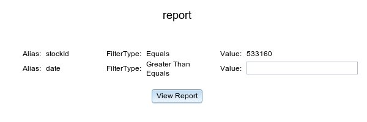

View Report
The page displays your saved report. At the top of the page, you will see your report name and attributes of
your filters if any. If in any filter value is not defined earlier, you can provide a dynamic value here.
On clicking view report button, you see your graph or table.
